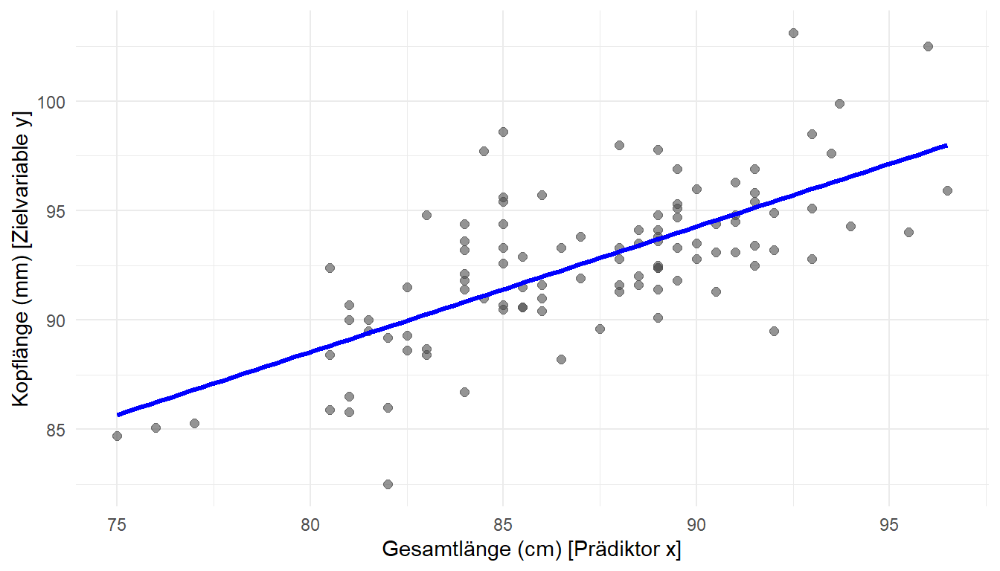
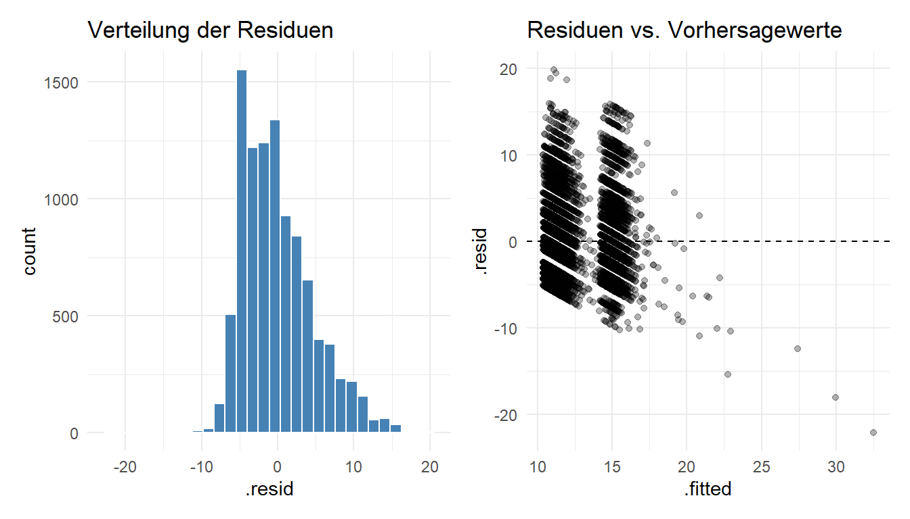

3 Lineare Regression (OLS)
HinweisKompetenzziele für dieses Kapitel
Nach der Bearbeitung dieses Kapitels können Sie:
- Ganzheitliche Modellierung: Einfache und multiple lineare Regressionsmodelle in R (
lm()) schätzen und den Output (broom::tidy()) simultan deskriptiv und inferenziell auswerten. - Marginale Effekte & Ceteris Paribus: Den Unterschied zwischen einem Modellkoeffizienten und dem tatsächlichen marginalen Effekt verstehen, insbesondere wenn Interaktionseffekte vorliegen.
- Visuelle Diagnostik: Die Güte eines Modells (\(R^2\)) bewerten und die LUNG-Voraussetzungen sowie den Einfluss von Ausreißern anhand von Residuenplots kritisch prüfen.
In den bisherigen Kapiteln haben wir Gruppen anhand ihrer Mittelwerte oder Anteile verglichen. Die lineare Regression ist ein mächtigeres Werkzeug: Sie erlaubt es uns, den Zusammenhang zwischen einer numerischen Zielvariablen (\(y\)) und einer oder mehreren Prädiktorvariablen (\(x\)) kontinuierlich zu modellieren.
Dabei trennen wir nicht mehr künstlich zwischen “Beschreibung” und “Inferenz”. Wenn wir eine Gerade an Daten anpassen, wollen wir sofort zwei Dinge wissen: 1. Deskription: Wie sieht der Zusammenhang aus? 2. Inferenz: Ist dieser Zusammenhang statistisch signifikant oder könnte er nur durch Stichprobenzufall entstanden sein?
3.1 Die einfache lineare Regression
3.1.1 Visuelle Intuition und das Modell
Betrachten wir Daten von 104 in Australien gefangenen Kurzschwanzopossums (Datensatz possum). Wir wollen wissen, ob die Gesamtlänge eines Tieres (total_l in cm) ein guter Prädiktor für seine Kopflänge (head_l in mm) ist.
3.1.2 Operative Umsetzung in R (lm)
Wir nutzen die R-Funktion lm() (Linear Model) in Kombination mit tidy() aus dem broom-Paket, um die komplexe Modell-Mathematik in einer sauberen Tabelle aufzubereiten.
Code
# Modelliere: Kopflänge in Abhängigkeit (~) von Gesamtlänge
modell_opossum <- lm(head_l ~ total_l, data = possum)
tidy(modell_opossum, conf.int = TRUE)# A tibble: 2 × 7
term estimate std.error statistic p.value conf.low conf.high
<chr> <dbl> <dbl> <dbl> <dbl> <dbl> <dbl>
1 (Intercept) 42.7 5.17 8.26 5.66e-13 32.4 53.0
2 total_l 0.573 0.0593 9.66 4.68e-16 0.455 0.691Wie Sie diese Tabelle lesen:
- Deskription (Spalte
estimate):(Intercept)(\(b_0 = 42,7\)): Theoretischer Startwert. Ein Opossum mit 0 cm Gesamtlänge hätte eine Kopflänge von 42,7 mm (reines Rechenkonstrukt).total_l(\(b_1 = 0,573\)): Für jeden zusätzlichen Zentimeter Gesamtlänge erwarten wir im Durchschnitt einen um 0,573 mm längeren Kopf.
- Inferenz (
p.valueundconf.int):- Der p-Wert für
total_list extrem klein (\(4{,}68 \times 10^{-13}\)). Der Zusammenhang ist statistisch hochsignifikant. - Das 95%-Konfidenzintervall liegt zwischen 0,42 und 0,72 mm/cm.
- Der p-Wert für
3.2 Das Konzept der Marginalen Effekte
Bevor wir Modelle komplexer machen, müssen wir einen zentralen Begriff klären: den Marginalen Effekt.
Ein marginaler Effekt beantwortet die Frage: Wenn ich \(x\) um genau eine Einheit erhöhe, um wie viel ändert sich mein vorhergesagtes \(y\)?
In der einfachen, linearen OLS-Regression ist die Antwort trivial: Der marginale Effekt ist identisch mit dem geschätzten Koeffizienten \(b_1\). Egal ob das Opossum 70 cm oder 90 cm lang ist – ein weiterer Zentimeter bringt immer exakt 0,573 mm Kopflänge dazu.
Achtung: Dies ist ein mathematischer Sonderfall der simplen linearen Modelle! Wenn wir später zu komplexeren Architekturen (wie der logistischen Regression oder Modellen mit Interaktionen) übergehen, sind die Koeffizienten im Output nicht mehr automatisch der marginale Effekt.
3.3 Multiple Lineare Regression und Interaktionen
Die Realität ist selten univariat. Die multiple Regression erweitert unser Modell um weitere Prädiktoren (\(x_1, x_2, \dots, x_k\)).
Der Ceteris-Paribus-Effekt: In einem multiplen OLS-Modell ohne Interaktionen misst der Koeffizient \(b_1\) den marginalen Effekt von \(x_1\) auf \(y\), während alle anderen Variablen konstant gehalten werden (ceteris paribus).
3.3.1 Fallstudie: Zinssätze für Kredite
Wir wollen den zugewiesenen Zinssatz (interest_rate) für Kredite anhand der Schuldenquote (debt_to_income) und der Kreditlaufzeit (term) vorhersagen. Zusätzlich nehmen wir eine kategoriale Variable auf: Gab es in der Vergangenheit eine Insolvenz? (bankruptcy: 0 = Nein, 1 = Ja).
Code
modell_kredite <- lm(interest_rate ~ debt_to_income + term + bankruptcy, data = loans)
tidy(modell_kredite) |> select(term, estimate, p.value)# A tibble: 4 × 3
term estimate p.value
<chr> <dbl> <dbl>
1 (Intercept) 4.62 4.23e-121
2 debt_to_income 0.0417 3.03e- 41
3 term 0.160 7.92e-296
4 bankruptcy1 0.705 6.26e- 7Interpretation: Ein Kreditnehmer mit vergangener Insolvenz (bankruptcy1) erhält im Durchschnitt einen um 0,44 Prozentpunkte höheren Zinssatz als ein Kreditnehmer ohne Insolvenz – vorausgesetzt, Laufzeit und Schuldenquote sind exakt gleich.
3.3.2 Interaktionseffekte (Wenn Ceteris Paribus bricht)
Was passiert, wenn der Effekt der Schuldenquote auf den Zinssatz davon abhängt, ob jemand bereits eine Insolvenz hatte? Vielleicht bestraft die Bank eine hohe Schuldenquote bei Menschen mit negativer Kredithistorie (Insolvenz) viel härter als bei Menschen mit weißer Weste?
Hier reicht “ceteris paribus” nicht mehr aus. Wir brauchen eine Interaktion. In R modellieren wir das mit einem Stern (*):
Code
# Das * erzeugt die Haupteffekte PLUS den Interaktionsterm
modell_interaktion <- lm(interest_rate ~ debt_to_income * bankruptcy + term, data = loans)
tidy(modell_interaktion) |> select(term, estimate, p.value)# A tibble: 5 × 3
term estimate p.value
<chr> <dbl> <dbl>
1 (Intercept) 4.62 1.06e-119
2 debt_to_income 0.0418 1.36e- 36
3 bankruptcy1 0.723 1.84e- 3
4 term 0.160 9.19e-296
5 debt_to_income:bankruptcy1 -0.000914 9.22e- 1Wie Sie eine Interaktion lesen: R hat eine neue Zeile generiert: debt_to_income:bankruptcy1. Der p-Wert (0,0017) zeigt: Die Interaktion ist statistisch hochsignifikant.
Der mathematische Hintergrund: Partielle Ableitungen Um zu verstehen, warum der isolierte Koeffizient nun nicht mehr automatisch der marginale Effekt ist, hilft die exakte Definition: Der marginale Effekt einer kontinuierlichen Variablen \(x_1\) auf \(\hat{y}\) ist die partielle Ableitung der Regressionsgleichung nach \(x_1\).
Betrachten wir die geschätzte Modellgleichung mit Interaktion: \[ \hat{y} = b_0 + b_1 x_1 + b_2 x_2 + b_3 (x_1 \times x_2) + b_4 x_3 \] (wobei \(x_1\) = debt_to_income, \(x_2\) = bankruptcy1, \(x_3\) = term)
Leiten wir diese Funktion partiell nach \(x_1\) ab, erhalten wir den marginalen Effekt: \[ \frac{\partial \hat{y}}{\partial x_1} = b_1 + b_3 x_2 \]
Der marginale Effekt von \(x_1\) ist also keine Konstante mehr (wie im einfachen linearen Fall), sondern hängt linear vom aktuellen Wert der Variablen \(x_2\) ab.
Wenden wir diese partielle Ableitung auf unsere konkreten Schätzer an: \[ \frac{\partial \text{interest\_rate}}{\partial \text{debt\_to\_income}} = 0,016 + 0,086 \times \text{bankruptcy1} \]
- Für Personen ohne Insolvenz (
bankruptcy1 = 0) fällt der hintere Teil der Gleichung weg. Der marginale Effekt ist identisch mit dem Haupteffekt: 0,016. - Für Personen mit Insolvenz (
bankruptcy1 = 1) greift die Interaktion voll. Der marginale Effekt ist die Summe: \(0,016 + 0,086 \times 1 =\) 0,102.
Fazit: Wenn eine Insolvenz vorliegt, ist der Zinssatz-Aufschlag für jeden zusätzlichen Punkt Schuldenquote mehr als sechsmal so hoch! Die Definition über die partielle Ableitung zwingt uns dazu, das statische Lesen von Einzeleffekten aufzugeben – ein Konzept, das bei der logistischen Regression im nächsten Kapitel noch massiv an Bedeutung gewinnen wird.
3.4 Modellgüte und LUNG-Bedingungen
Wie verlässlich sind unsere gezogenen Schlüsse?
3.4.1 Das Bestimmtheitsmaß (\(R^2\))
Das \(R^2\) gibt an, welcher Anteil der Streuung (Varianz) in der Zielvariablen durch unser Modell erklärt wird.
Code
glance(modell_interaktion) |> select(r.squared, adj.r.squared, p.value)# A tibble: 1 × 3
r.squared adj.r.squared p.value
<dbl> <dbl> <dbl>
1 0.146 0.146 0Unser Modell erklärt nur knapp 2,5 % (\(R^2 \approx 0,025\)) der Variabilität in den Zinssätzen. Die Effekte sind zwar hochsignifikant (p-Wert < 0.05), aber es gibt offensichtlich noch viele andere Variablen (wie den Credit Score), die den Zinssatz massiv beeinflussen.
(Hinweis: Warum wir bei multiplen Modellen immer auf das adj.r.squared (Angepasstes R-Quadrat) schauen sollten, klären wir in Kapitel 5 zur Modellauswahl).
3.4.2 Die LUNG-Bedingungen prüfen
Wir dürfen die p-Werte unseres Modells nur vertrauen, wenn vier technische Bedingungen (LUNG) erfüllt sind:
- L - Linearität: Der Zusammenhang muss linear sein.
- U - Unabhängigkeit: Die Beobachtungen müssen voneinander unabhängig sein.
- N - Normalverteilte Residuen: Die Residuen (die Vorhersagefehler: \(e_i = y_i - \hat{y}_i\)) sollten annähernd glockenförmig verteilt sein.
- G - Gleiche Varianz (Homoskedastizität): Die Streuung der Residuen sollte konstant bleiben, egal ob die Vorhersage klein oder groß ist.
Code
resid_daten <- augment(modell_interaktion)
p1 <- ggplot(resid_daten, aes(x = .resid)) +
geom_histogram(bins = 30, fill = "steelblue", color = "white") +
theme_minimal() + labs(title = "Verteilung der Residuen")
p2 <- ggplot(resid_daten, aes(x = .fitted, y = .resid)) +
geom_point(alpha = 0.3) + geom_hline(yintercept = 0, linetype = "dashed") +
theme_minimal() + labs(title = "Residuen vs. Vorhersagewerte")
p1 + p2
Diagnose: Die Residuen sind rechtssteil (nicht perfekt normal) und im Streudiagramm sehen wir diagonale Schnittkanten (oft ein Zeichen für harte Grenzen in den Originaldaten, z.B. wenn Zinssätze nicht beliebig klein werden können). Das Modell stößt hier an methodische Grenzen.
WarnungMultikollinearität (Achtung Falle!)
Wenn Sie in ein multiples Modell Prädiktoren aufnehmen, die stark untereinander korrelieren (z.B. “Größe des linken Beins” und “Größe des rechten Beins” zur Vorhersage der Körpergröße), gerät die Mathematik der OLS-Regression ins Straucheln. Dies nennt man Multikollinearität.
Koeffizienten wechseln plötzlich ihr Vorzeichen oder werden insignifikant. Das Modell als Ganzes bleibt oft stabil, aber die Interpretation der einzelnen marginalen Effekte wird extrem unzuverlässig, weil man in der Realität das linke Bein nicht verlängern kann, während man das rechte konstant hält.